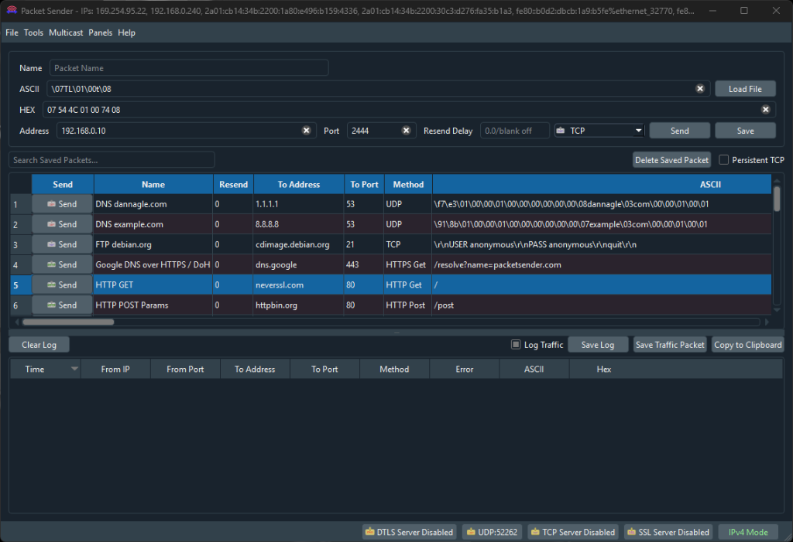

Description :
Petit outil sous Windows qui permet d’envoyer des **trames hexadécimales via TCP** et de recevoir une réponse du serveur, comme un « telnet amélioré » pour données binaires.

Packet Sender
L'outil polyvalent pour l'envoi et la réception de paquets réseaux.Packet Sender est un utilitaire open source indispensable pour tester la communication entre vos équipements. Il permet d'envoyer et de recevoir des trames via de nombreux protocoles (TCP, UDP, HTTP/HTTPS, SSL).
- Points forts : Création rapide de paquets hexadécimaux ou ASCII, fonction de serveur intégré pour vérifier les réponses des automates, et sauvegarde de commandes pour automatiser vos tests récurrents.
- Usage type : Simuler un client MQTT, tester une requête spécifique sur un port TCP ouvert ou vérifier la réponse d'un capteur Ethernet.
Contrairement à des outils plus lourds, il permet de tester une connexion en quelques secondes sans avoir à configurer un projet complet. C'est l'étape logique juste après le "Ping" pour vérifier qu'un service répond correctement.